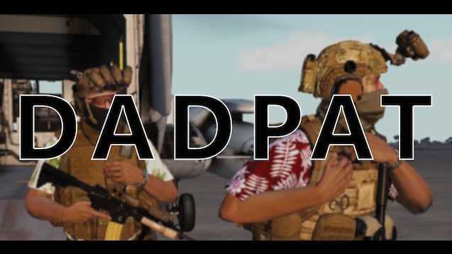

----------------------------------------------------------------------------------------------------
----------------------------------------------------------------------------------------------------
<- home====================================================================================================
I can't claim credit for this idea. It was suggested by my online friend "Goober". I found some references and a seamless pattern tutorial, booted up Photoshop, and made a Hawaiian shirt pattern.  The process for creating retextures is fairly straighforward: - Get the textures of the uniform/item you want to work on - Cut out sections of the texture to easily recolor or add patterns to them - Save and convert to .paa format - Write the config and pack it into a format usable by Arma 3